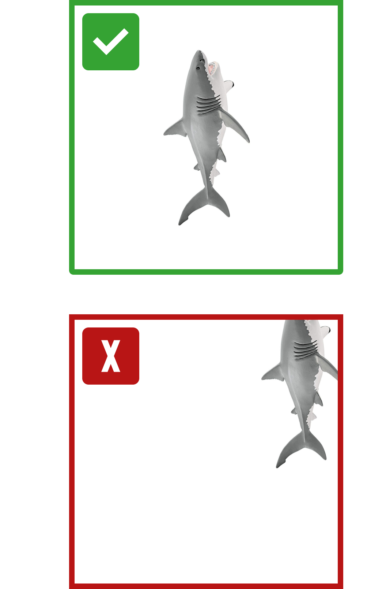

{% extends "base.html" %}
{% block page_name %}Introduction to the interaction
{% endblock %}

{% block page_block1 %}

{% endblock %}

{% block page_block2 %}
    <form action="{{ url_for('handle_forms') }}" method="post">
        <p>
            <input type="hidden" name="answer" value="22_1_00">
        </p>
        <p>
            <button id="button" type="submit" class="btn btn-light nextButton" style="float: left;">
            </button>
        </p>
    </form>
{% endblock %}


{% block script %}

<script>

let subheading = document.getElementById('description_text');
subheading.style.width = "600px";
let button = document.getElementById('button');

let language = '{{ language }}';
    console.log("LANGUAGE" + language);

    var subcontent = "";
    var buttonText = "";

    switch (language){
        case "en":
            console.log("LANGUAGE IS ENGLISH HIHI");
            subcontent = "As you saw, I couldn’t recognise the object when you moved it to a different <span style='color:#FFD951'>position</span>.<br><br>To be really good at recognising an object at different position, I need to have more images of it.<br><br>When I say more, I mean thousands of images. Imagine you would have to do this for me. It would take really long!"
            buttonText = "Next";
            break; 
        case "de":
            console.log("LANGUAGE IS GERMAN HIHI");
            headcontent = "Hey, ich bin YVES!"
            subcontent = "Manche Computer Systeme können mit machine learning objekte erkennen, <br> blabliblu"
            buttonText = "Weiter";
            break;
        case "rus":
            console.log("LANGUAGE IS RUSSIAN HIHI");
            headcontent = "russian"
            subcontent = "russian"
            buttonText = "russian";
            break;
        case "pol":
            console.log("LANGUAGE IS POLISH HIHI");
            headcontent = "polish"
            subcontent = "Jak widzisz nie rozpoznaję zabawki, jeśli jest w <span style='color:#FFD951'>innym miejscu</span>.<br><br>Aby być naprawdę dobrym w rozpoznawaniu obiektu w różnych pozycjach, muszę mieć więcej jego obrazów.<br><br>Przy czym 'więcej' oznacza tysiące obrazów. Wyobraź sobie, że musiałbyś to zrobić za mnie. Zajęłoby to naprawdę dużo czasu!"
            buttonText = "Następny";
            break;
    }

    subheading.innerHTML = subcontent;
    button.innerHTML = buttonText;

</script>

{% endblock %}
